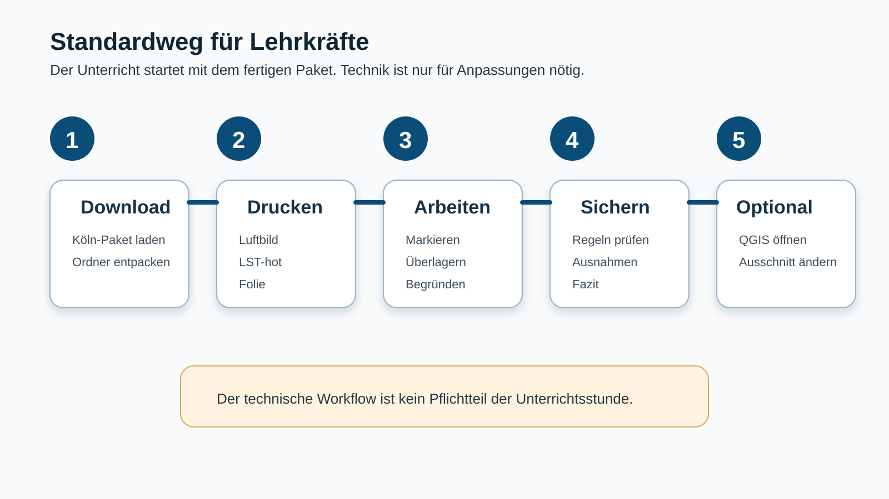
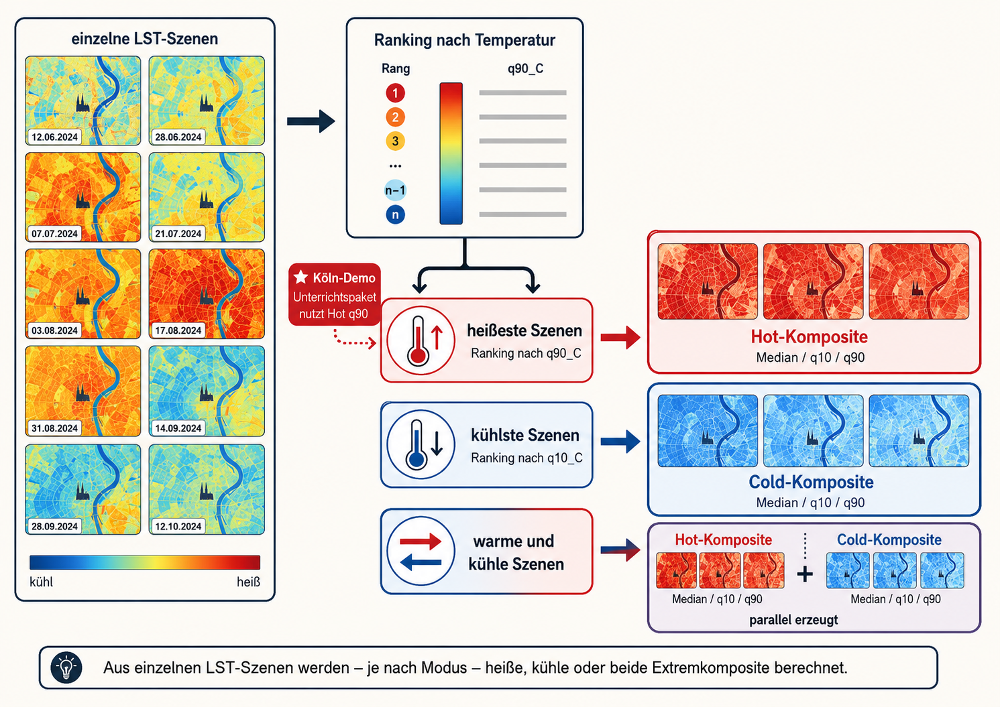
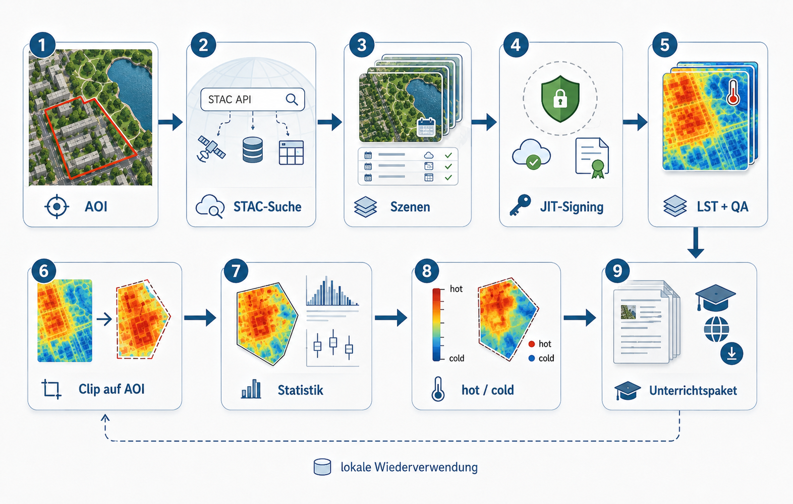

Zweck der technischen Seite
Diese Seite dokumentiert den technischen Workflow hinter dem Köln-Demo-Paket. Sie ist nicht für die Unterrichtsdurchführung notwendig. Für die Stunde selbst reichen die fertigen Druckprodukte und die inhaltliche Lehrerhandreichung. Diese Seite ist für Personen gedacht, die das Paket neu erzeugen, prüfen oder für einen anderen Ausschnitt anpassen wollen.
Der Workflow erzeugt aus einem Untersuchungsgebiet, einem Zeitraum und einer DOP-CIR-basierten Oberflächenmaske ein QGIS-Projekt mit passgenauen Drucklayouts. Im Unterricht wird damit nicht gerechnet. Die Skripte erzeugen das Material, die Lernenden arbeiten anschließend mit Karten, Folien und Beobachtungen.

Standardweg und technischer Weg
Der Standardweg bleibt: fertiges Materialpaket verwenden, Karten ausdrucken, Stunde durchführen. Der technische Weg beginnt erst, wenn ein eigenes Datenpaket erzeugt oder das bestehende Köln-Paket reproduziert werden soll.

Für den technischen Weg gibt es drei Ebenen:
00_run_lst_oberflaechenmaske_dop_cir.Rist der zentrale Einstieg.landsat_lst_mit_dop_cir_oberflaechenmaske.Rerzeugt AOI, Landsat-LST-Produkte, Extremkomposite und Teaching-Layer.create_qgis_project.pyerzeugt danach das QGIS-Projekt, Layerstyling und die Drucklayouts.
Das QGIS-Projekt wird nicht mehr manuell aus einem separaten Ordner gestartet. Der 00-Runner kann am Ende den QGIS-Launcher aufrufen. Unter Linux wird scripts/run_create_qgis_project.sh verwendet, unter Windows scripts/run_create_qgis_project.bat.
Projektstruktur
Die Skripte erwarten diese Grundstruktur:
project_root/
├── scripts/
│ ├── 00_run_lst_oberflaechenmaske_dop_cir.R
│ ├── landsat_lst_mit_dop_cir_oberflaechenmaske.R
│ ├── dop_cir_oberflaechenmaske_modul.R
│ ├── create_qgis_project.py
│ ├── run_create_qgis_project.sh
│ └── run_create_qgis_project.bat
└── data/
└── landsat_lst/
└── koeln/Für das Untersuchungsgebiet koeln werden die erzeugten Daten unterhalb von data/landsat_lst/koeln/ abgelegt:
data/landsat_lst/koeln/
├── 01_aoi/
├── 02_stac/
├── 03_landsat_scenes/
├── 04_extremes/
├── 05_teaching_layers/
│ ├── projected_lst/
│ └── dop_cir_surface_mask/
├── 06_qgis_project/
│ └── print_exports/
└── 99_logs/Wichtig für das Unterrichtspaket sind vor allem:
05_teaching_layers/projected_lst/koeln_LST_hot_q90_C_EPSG25832.tif
05_teaching_layers/dop_cir_surface_mask/koeln_dop_cir_30m_3klassen.gpkg
06_qgis_project/koeln_lst_oberflaechenmaske.qgz
06_qgis_project/print_exports/Zentrale Parameter im 00-Runner
Die wichtigsten Einstellungen stehen im Einstiegsskript 00_run_lst_oberflaechenmaske_dop_cir.R. Für die Köln-Demo ist der Workflow auf hot-LST und DOP-CIR-Oberflächenmaske ausgerichtet:
aoi_name <- "koeln"
aoi_mode <- "koeln_stadtbezirke"
date_start <- "2023-01-01"
date_end <- "2026-01-01"
seasonal_months <- 6:8
extreme_mode <- "hot"
hot_metric <- "q90_C"
n_hot <- 10
crs_qgis <- 25832
crs_lucc <- 3035
aerial_source_mode <- "both"
run_qgis_project_creation <- FALSErun_qgis_project_creation <- FALSE verhindert einen älteren internen QGIS-Projektaufruf. Das QGIS-Projekt wird stattdessen am Ende des 00-Runners über den separaten Launcher erzeugt. Dadurch bleibt die QGIS-Layoutlogik im PyQGIS-Skript und wird nicht mit der Landsat-Verarbeitung vermischt.
DOP-CIR-Oberflächenmaske
Die Oberflächenmaske wird aus dem DOP-CIR-WMS NRW erzeugt. Sie dient als didaktische Grobmaske für drei Oberflächenklassen:
1 Vegetation
2 Wasser
3 Versiegelung / BebauungDie Maske ist keine wissenschaftliche Landcover-Klassifikation. Sie ist eine robuste Unterrichtsvereinfachung, um sichtbare Oberflächen mit LST-Mustern zu vergleichen. Grundlage ist ein DOP-CIR-Bild, das als RGB-Bild über den WMS geladen wird. Die Klassifikation nutzt eine restitutierte RGB-/Excess-Logik, keine HSV-Klassifikation.
Der WMS-Zugriff erfolgt über:
https://www.wms.nrw.de/geobasis/wms_nw_dop?language=ger
Layer: nw_dop_cir
CRS: EPSG:25832Die erzeugte Maske wird auf 30 m Zielauflösung gebracht, weil sie didaktisch zur Landsat-LST-Maßstabsebene passen soll. Danach folgen optional Majority-Filter, klassenspezifische Sieve-Filter für Wasser und Vegetation sowie eine kartographische Vektorglättung. Diese Schritte betreffen die Maske, nicht das RGB-DOP für die Orientierung.
Die drei Klassen sind fachlich so gedacht:
| Klasse | Bedeutung im Unterricht | Erwartete thermische Tendenz |
|---|---|---|
| Vegetation | Parks, Bäume, Wiesen, Grünzüge, begrünte Innenhöfe | häufig kühler durch Schatten und Verdunstung |
| Wasser | Rhein, Hafenbecken, Weiher, Teiche | häufig kühler bzw. thermisch träger |
| Versiegelung / Bebauung | Straßen, Plätze, Dächer, Bahnanlagen, Gewerbe, Parkplätze | häufig wärmer durch geringe Verdunstung und Wärmespeicherung |
Offene Böden, Schotter, Baustellen oder trockene Brachen werden nicht als eigene Hauptklasse geführt. Sie sind Grenzfälle, die im Unterrichtsgespräch thematisiert werden können.
Landsat-LST-Verarbeitung
Die Landsat-Szenen werden über den Planetary Computer STAC gesucht. Verwendet werden Landsat 8 und Landsat 9, Level-2-Produkte mit thermischem Band und QA-Pixel-Band. Aus dem thermischen Band wird LST in Grad Celsius berechnet. Ungültige Pixel, Wolken, Wolkenschatten, Cirrus und weitere QA-Probleme werden maskiert.
Der Workflow erzeugt zunächst einzelne lokale LST-Szenen und berechnet danach Extremkomposite. Für die Köln-Demo steht der hot-Modus im Zentrum. Es werden die heißesten Szenen nach q90_C ausgewählt und daraus Komposite berechnet.

Für das aktuelle Unterrichtspaket werden zwar mehrere Hot-Produkte erzeugt, im QGIS-Projekt wird aber nur das zentrale Produkt verwendet:
koeln_LST_hot_q90_C_EPSG25832.tifDieses Produkt wird als „hottest hot“ genutzt. Es zeigt die robuste obere Temperaturtendenz der ausgewählten heißen Szenen und eignet sich für den Vergleich mit Stadtstruktur, Vegetation und Wasser.
QGIS-Projekt und Layerlogik
Das QGIS-Projekt wird durch scripts/create_qgis_project.py erzeugt. Weil QGIS --code intern per exec(f.read()) ausführt, wird im Python-Skript nicht mit __file__ gearbeitet. Der Launcher setzt stattdessen:
QGIS_SCRIPT_DIR
PROJECT_ROOTDie Layerreihenfolge im Projekt ist bewusst reduziert:
oben
04 Oberflächenmaske Linien
03 Kartenrahmen
02 Hot LST q90
01 DOP RGB
00 Orientierung
untenIm QGIS-Projekt bleibt das DOP RGB mit voller Deckkraft sichtbar. Der LST-Layer kann im Projekt transparent oder deckend geführt werden, je nach gewünschter Lesbarkeit. Für die finalen Printlayouts wird die LST-Karte eigenständig gedruckt, damit die Farbklassen nicht durch das DOP gedämpft werden.
Das QGIS-Projekt enthält nur noch das q90-Hot-Produkt, nicht mehr median, q10 oder cold. Dadurch bleibt das Projekt übersichtlich und entspricht der Unterrichtslogik: Es geht um den Zusammenhang zwischen Oberfläche, Stadtstruktur und warmen Oberflächentemperaturen.
Printlayouts und Export
Das PyQGIS-Skript erzeugt vier Layouts:
Print 01 DOP
Print 02 Hot LST q90
Print 03 Maskenoverlay
Print 04 Rahmen GraticuleDie Layouts haben denselben Kartenausschnitt und denselben Kartenrahmen. Dadurch können Ausdrucke oder Folien übereinandergelegt werden. Die Legenden sind bewusst minimal, weil die eigentliche Arbeit in der räumlichen Zuordnung liegt, nicht in einer vollwertigen kartographischen Legende.
Die Exportdateien liegen unter:
data/landsat_lst/koeln/06_qgis_project/print_exports/Erzeugt werden:
koeln_print_01_dop.pdf
koeln_print_02_lst_hot_q90.pdf
koeln_print_03_mask_overlay.pdf
koeln_print_04_frame_graticule.pdf
koeln_print_03_mask_overlay_transparent.png
koeln_print_04_frame_graticule_transparent.pngBeim Druck muss immer mit tatsächlicher Größe gedruckt werden:
100 %
nicht an Seite anpassen
keine automatische SkalierungNur dann liegen DOP, LST, Maske und Passfolie deckungsgleich übereinander.
Kartenausschnitt und Gitternetz
Der Kartenausschnitt wird im Python-Skript über MAP_EXTENT_25832 gesteuert:
MAP_EXTENT_25832 = (353000.00, 5642500.00, 358500.00, 5647500.00)Die Werte sind Koordinaten in EPSG:25832. Für einen anderen Ausschnitt kann in QGIS der gewünschte Kartenausschnitt eingestellt und dann in der Python-Konsole ausgelesen werden:
e = iface.mapCanvas().extent()
print((e.xMinimum(), e.yMinimum(), e.xMaximum(), e.yMaximum()))Die ausgegebenen vier Werte werden anschließend in MAP_EXTENT_25832 eingetragen.
Das Gitternetz wird über GRID_INTERVAL_M gesteuert:
GRID_INTERVAL_M = 1000Für gröbere Passmarken kann hier z. B. 2000 gesetzt werden. Für die Unterrichtsausdrucke ist ein zu dichtes Gitternetz ungünstig, weil es die Bildinterpretation stören kann. Der Rahmen- und Graticule-Layer dient vor allem dazu, Ausdrucke und Folien exakt auszurichten.
Linux-Start
Unter Linux startet der zentrale R-Workflow alles:
Rscript scripts/00_run_lst_oberflaechenmaske_dop_cir.RAm Ende ruft der Runner den QGIS-Launcher auf:
scripts/run_create_qgis_project.shDer Launcher setzt die QGIS-Python-Umgebung bewusst explizit:
export PYTHONNOUSERSITE=1
export PYTHONPATH="/usr/share/qgis/python:/usr/lib/python3/dist-packages"Außerdem entfernt er fremde Python-/Reticulate-/venv-Variablen, damit QGIS nicht mit einer Projekt-venv gestartet wird. Das ist notwendig, weil QGIS sein eigenes Python-/SIP-Umfeld benötigt.
Windows-Start
Unter Windows ruft der 00-Runner diesen Launcher auf:
scripts/run_create_qgis_project.batDie BAT-Datei sucht nach typischen QGIS-Installationen. Wenn QGIS nicht automatisch gefunden wird, muss QGIS_BIN manuell gesetzt werden, zum Beispiel:
set QGIS_BIN=C:\Program Files\QGIS 3.34.4\bin\qgis-bin.exeoder bei OSGeo4W:
set QGIS_BIN=C:\OSGeo4W\bin\qgis-ltr-bin.exeDie BAT-Datei setzt wie der Linux-Launcher:
QGIS_SCRIPT_DIR
PROJECT_ROOTund startet dann:
"%QGIS_BIN%" --noplugins --code "%QGIS_SCRIPT%"Technischer Datenfluss

Der technische Ablauf lässt sich so zusammenfassen:
AOI / Köln-Stadtbezirke
→ Landsat-STAC-Suche
→ LST-Szenen in Grad Celsius
→ Auswahl heißer Szenen nach q90_C
→ Hot-LST-Komposite
→ DOP-CIR-Oberflächenmaske
→ Teaching-Layer
→ QGIS-Projekt
→ vier passgleiche PrintlayoutsDas DOP-RGB dient der Orientierung, die LST-Karte zeigt die Temperaturmuster, die DOP-CIR-Maske liefert die reduzierten Oberflächenklassen und die Passfolie kontrolliert die deckungsgleiche Lage der Ausdrucke.
Fehlerquellen
QGIS startet, aber Python bricht mit SIP- oder qgis-Importfehler ab
Dann wurde QGIS wahrscheinlich aus einer kontaminierten Python-Umgebung gestartet. Der Launcher muss verwendet werden, nicht ein direkter Aufruf wie:
qgis --code scripts/create_qgis_project.pyDer Launcher setzt die QGIS-Pythonpfade und entfernt venv-/Reticulate-Einträge.
__file__ ist nicht definiert
Das ist bei QGIS --code normal. Das Python-Skript darf daher keine Pfade über Path(__file__) ableiten. Stattdessen werden QGIS_SCRIPT_DIR und PROJECT_ROOT durch den Launcher gesetzt.
DOP wirkt in der Layoutvorschau grob
Die QGIS-Layoutvorschau kann WMS-Layer gröber darstellen. Entscheidend ist der exportierte PDF. Wenn auch der PDF zu grob ist, sollte das DOP für den exakten Layoutausschnitt als lokales, georeferenziertes Raster vorgerendert werden. Das betrifft nur die Druckqualität des Luftbildes, nicht die 30-m-DOP-CIR-Maske.
Ausdrucke passen nicht exakt übereinander
Dann wurde wahrscheinlich mit Seitenskalierung gedruckt. Alle Ausdrucke müssen mit 100 % beziehungsweise tatsächliche Größe gedruckt werden. Automatische Anpassung an das Seitenformat zerstört die Passgenauigkeit.
Pflegehinweise
Die erzeugten Daten gehören nicht ins Git-Repository. Mindestens diese Ordner sollten ignoriert werden:
/data/
/.venv-folienvorlage/Das Repository sollte die Skripte, Quarto-Seiten und Abbildungen enthalten, nicht die erzeugten Landsat-, DOP-, QGIS- oder Printprodukte.
Kurzfassung
Die technische Seite beschreibt nicht die Unterrichtsstunde, sondern die Materialproduktion. Der aktuelle Stand ist:
R-Workflow erzeugt Daten
DOP-CIR-Modul erzeugt 3-Klassen-Oberflächenmaske
QGIS-Python-Skript erzeugt q90-Hot-Projekt
QGIS-Launcher erzeugt vier passgenaue PrintlayoutsDie didaktische Reduktion bleibt konsequent: Vegetation, Wasser und versiegelte beziehungsweise bebaute Flächen werden mit Oberflächentemperaturen verglichen. Das technische System dient nur dazu, diese räumliche Beziehung sauber sichtbar und druckbar zu machen.